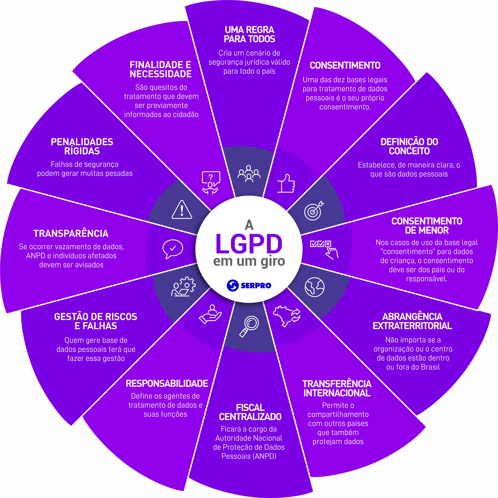

Das redes sociais ao e-commerce, dos bancos aos hospitais, de escolas a teatros, de hotéis a órgãos públicos, da publicidade à tecnologia: pode ter certeza, a Lei Geral de Proteção de Dados Pessoais (LGPD) afeta diferentes setores e serviços, e a todos nós brasileiras e brasileiros, seja no papel de indivíduo, empresa ou governo.
Aqui, a gente te ajuda a entender os seus direitos como cidadão, ou suas obrigações, caso você seja responsável por bases de dados de pessoas.
E damos, é claro, as boas-vindas a você que quer entender mais a LGPD, contribuir com ela, e buscar suporte. Vamos nessa?
Já que você topou, então vamos dar um "giro" pela LGPD e conhecer os principais pontos da lei.

Dispõe sobre a proteção de dados pessoais e altera a Lei nº 12.965, de 23 de abril de 2014 (Marco Civil da Internet).
Art. 1º Esta Lei dispõe sobre o tratamento de dados pessoais, inclusive nos meios digitais, por pessoa natural ou por pessoa jurídica de direito público ou privado, com o objetivo de proteger os direitos fundamentais de liberdade e de privacidade e o livre desenvolvimento da personalidade da pessoa natural.
Parágrafo único. As normas gerais contidas nesta Lei são de interesse nacional e devem ser observadas pela União, Estados, Distrito Federal e Municípios.
Art. 2º A disciplina da proteção de dados pessoais tem como fundamentos:
Art. 3º Esta Lei aplica-se a qualquer operação de tratamento realizada por pessoa natural ou por pessoa jurídica de direito público ou privado.
Confira o texto completo da lei:
Clique aqui para acessar